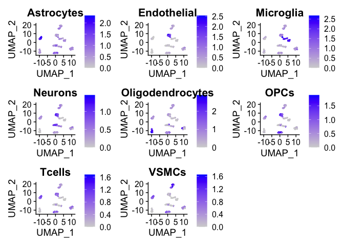

This package contains functions that trains a Random Forest Model with a labelled Seurat Object, for predicting cell types/states in unlabelled datasets. It also contains a pre-trained Random Forest model, as well as example datasets.
Manual cell annotation of scRNAseq datasets, typically based on marker genes, can be time-consuming and biased. Being able to automatically predict cell types/states in a cell-by-cell and cluster-unbiased way is useful for fast and accurate phenotyping.
In addition, despite the increasing amounts of scRNAseq datasets being generated, thorough analysis of these datasets is lagging, and/or done in silos. This package comes with a preloaded Random Forest model based on different datasets and cell types/states, that will be constantly updated.
You can install this package from GitHub with devtools::install_github("kimberle9/rfca")
View the manual here: https://kimberle9.github.io/rfca/articles/vignette.html
# Load the rfca and Seurat libraries, as well as example datasets library(rfca) library(Seurat) data("exampleSeuratObjectUnlabelled") data("exampleSeuratObjectLabelled") # Create Seurat Object with PCA and UMAP calculated mySeuratObject <- createSeuratObjectPipeline(data.dir = "~/filtered_feature_bc_matrix", nFeature_RNA_lower = 500, nFeature_RNA_upper = 5000, percent.mt = 5, nfeatures = 2000, dims = 20, clusterResolution = 0.8) # Assign cell type Idents to mySeuratObject manually, if you want to use it as a training dataset
library(rfca) library(Seurat) data("exampleSeuratObjectUnlabelled") data("exampleSeuratObjectLabelled") # Create Random Forest Model with your labelled Seurat Object myRandomForestModel <- createRFModel(exampleSeuratObjectLabelled)
##
## Call:
## randomForest(formula = V1 ~ ., data = merged, importance = TRUE, proximity = TRUE)
## Type of random forest: classification
## Number of trees: 500
## No. of variables tried at each split: 13
##
## OOB estimate of error rate: 4.7%
## Confusion matrix:
## Astrocytes Endothelial Microglia Neurons Oligodendrocytes OPCs
## Astrocytes 46 0 0 0 1 0
## Endothelial 0 52 2 0 0 0
## Microglia 0 1 46 0 0 0
## Neurons 1 0 0 46 1 3
## Oligodendrocytes 0 0 0 1 46 0
## OPCs 0 0 1 1 1 47
## Tcells 0 0 2 0 0 0
## VSMCs 1 0 1 0 0 0
## Tcells VSMCs class.error
## Astrocytes 0 0 0.02127660
## Endothelial 0 0 0.03703704
## Microglia 0 0 0.02127660
## Neurons 1 0 0.11538462
## Oligodendrocytes 0 0 0.02127660
## OPCs 1 0 0.07843137
## Tcells 50 0 0.03846154
## VSMCs 0 52 0.03703704# Create marker gene list from random forest model markerGeneList <- createGeneLists(myRandomForestModel)
## [1] "Adding gene list for Astrocytes"
## [1] "Adding gene list for Endothelial"
## [1] "Adding gene list for Microglia"
## [1] "Adding gene list for Neurons"
## [1] "Adding gene list for Oligodendrocytes"
## [1] "Adding gene list for OPCs"
## [1] "Adding gene list for Tcells"
## [1] "Adding gene list for VSMCs"# Visualize Feature Plot based on marker gene list myPlot <- cellMarkerPlots(exampleSeuratObjectLabelled, geneList = markerGeneList)
## [1] "Calculating average expression of genes in Astrocytes list."
## [1] "Calculating average expression of genes in Endothelial list."
## [1] "Calculating average expression of genes in Microglia list."
## [1] "Calculating average expression of genes in Neurons list."
## [1] "Calculating average expression of genes in Oligodendrocytes list."
## [1] "Calculating average expression of genes in OPCs list."
## [1] "Calculating average expression of genes in Tcells list."
## [1] "Calculating average expression of genes in VSMCs list."
myPlot
# Predict cells based on your own Random Forest Model created above autoLabelledSeuratObject <- predictCells(exampleSeuratObjectUnlabelled, myRandomForestModel)
##
## Astrocytes Endothelial Microglia Neurons
## 57 45 59 43
## Oligodendrocytes OPCs Tcells VSMCs
## 54 48 47 43# Predict cells based on my pre-loaded and pre-trained Random Forest Model autoLabelledSeuratObject <- predictCells(exampleSeuratObjectUnlabelled)
##
## Astrocytes Endothelial Microglia Neurons
## 53 46 53 48
## Oligodendrocytes OPCs Tcells VSMCs
## 53 49 48 46# Visualize autoLabelledSeuratObject DimPlot(autoLabelledSeuratObject)
library(rfca) library(Seurat) # Create Seurat object (microglia-only data) microglia <- createSeuratObjectPipeline(data.dir = "~/filtered_feature_bc_matrix") # Define microglia subtypes based on cluster numbers DimPlot(microglia) # Build Random Forest Model with cluster number as labels microgliaModel <- createRFModel(microglia) # Phenotype subtype proportion for different mouse models mouseModel1 <- predictCells(mouseModel1, microgliaModel) mouseModel2 <- predictCells(mouseModel2, microgliaModel) mouseModel3 <- predictCells(mouseModel3, microgliaModel)